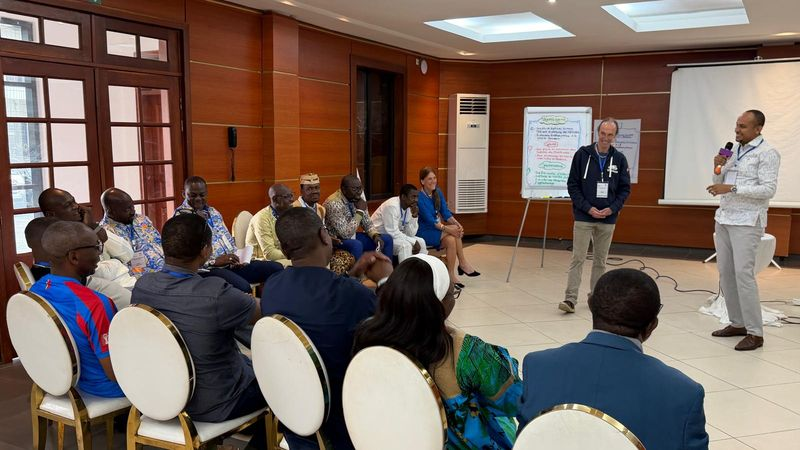
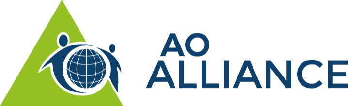
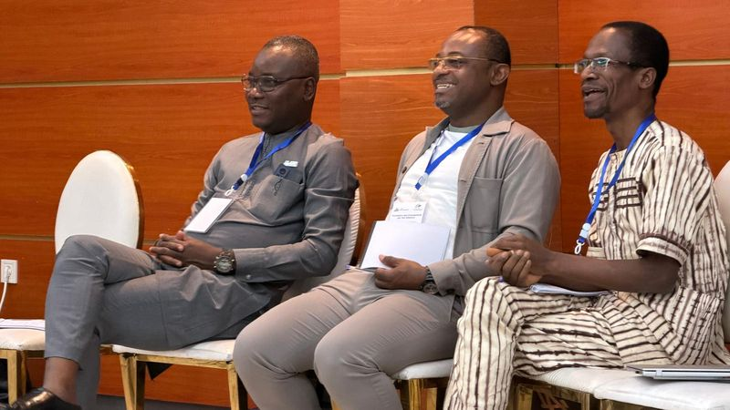
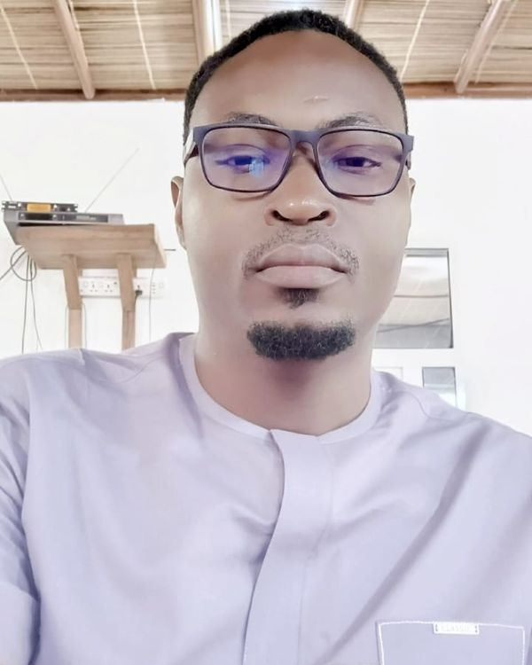
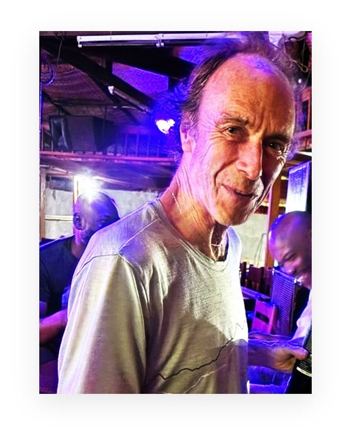
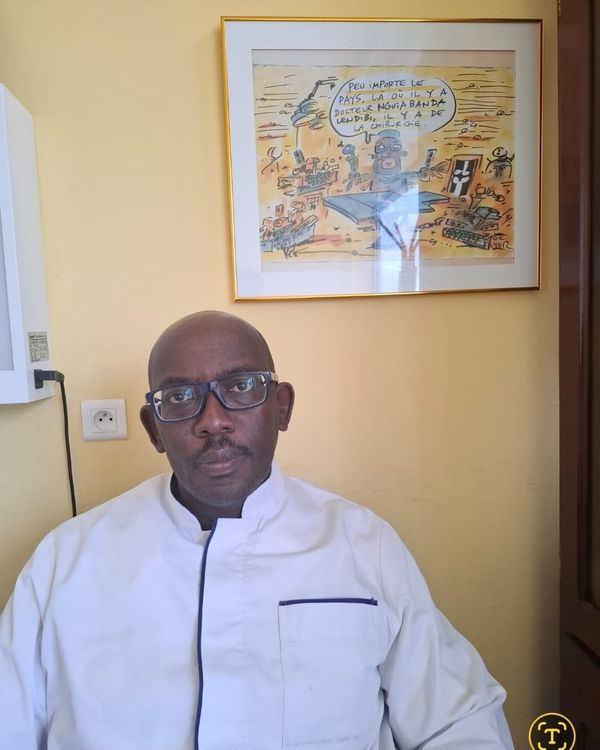
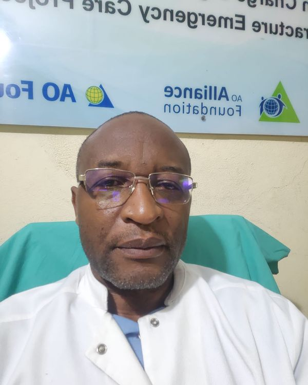
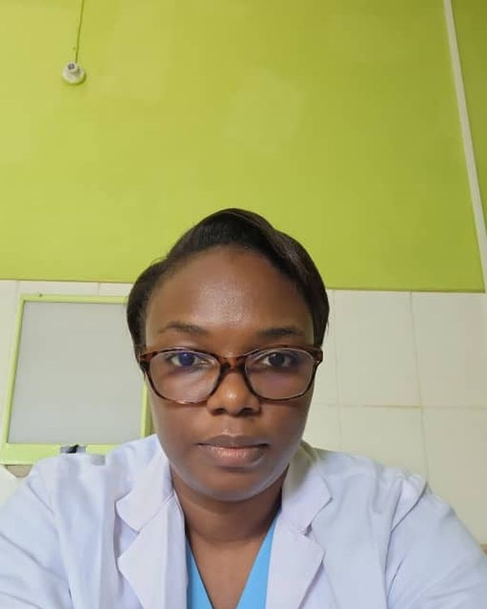
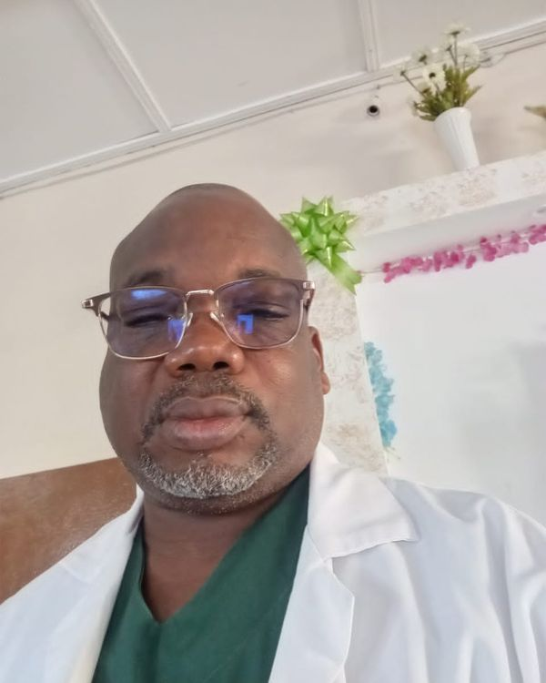

Une société savante née des blocs opératoires
Créée par des chirurgiens camerounais autour d’un constat simple — la traumatologie ne s’apprend pas seulement dans les livres —, l’association fédère praticiens, internes et personnels de bloc autour d’une même exigence technique.
Pourquoi l’association existe
Au Cameroun, les traumatismes de la route et du travail frappent surtout des hommes et des femmes en âge de travailler. Entre une consolidation correcte et une invalidité durable, la différence tient souvent à ce qui se passe dans les premières heures.
L’association ne construit pas d’hôpitaux et ne remplace personne. Elle fait une chose : porter la formation là où elle manque, avec des chirurgiens camerounais qui forment d’autres chirurgiens camerounais.

Quelques étapes
Fondation par un groupe de chirurgiens orthopédistes.
Premier cours opératoire organisé avec le réseau AO.
Ouverture des cours aux personnels de bloc.
Extension des séminaires aux régions du Nord et de l’Ouest.
Dates à compléter avec les archives de l’association.
Le bureau exécutif
Comment l’association décide
Assemblée générale
Souveraine : approuve les comptes, vote les orientations, élit le bureau et modifie les statuts.
Bureau exécutif
Conduit l’activité courante : calendrier, budget, partenariats, représentation.
Conseil scientifique
Garantit la qualité des contenus : programmes, protocoles, bourses, accréditation des formateurs.
Représentant d’AO Alliance pour l’Afrique francophone
AO Cameroun porte le mandat régional de l’AO Alliance pour l’Afrique francophone : organiser les cours, accompagner les sociétés nationales voisines et faire circuler les enseignants d’un pays à l’autre.

L’AO Alliance soutient la prise en charge des fractures dans les pays à ressources limitées : formation des chirurgiens et des personnels de bloc, matériel pédagogique, appui aux sociétés nationales. C’est le partenaire principal de nos cours.
L’AO Foundation est le réseau scientifique international à l’origine des principes de l’ostéosynthèse et de leur enseignement. Elle édite les référentiels sur lesquels nos programmes s’appuient.
ao-alliance.orgDirige la fondation et ses programmes dans les pays à ressources limitées.
Coordonne les cours, les enseignants et les projets de la région francophone.
Représente l’AO Alliance pour l’Afrique francophone et organise les sessions régionales.
Ils travaillent avec nous
Devenir Enseignant
Enseigner dans un cours accrédité demande une formation propre : savoir opérer ne suffit pas à savoir transmettre.
Participer
Avoir suivi au moins [X] cours comme participant.
Être proposé
Sur recommandation d’un enseignant et avis du conseil scientifique.
Se former à l’enseignement
Module de pédagogie du réseau AO et co-animation d’un atelier.
Être évalué
Première session encadrée, évaluée par les participants et le chairman.

Formation des enseignants de l’AO AllianceNos enseignants
Des chirurgiens et des personnels de bloc en exercice, formés à l’enseignement du geste et engagés dans les cours de la région.






Photographies transmises par l’association — les noms et fonctions restent à compléter.